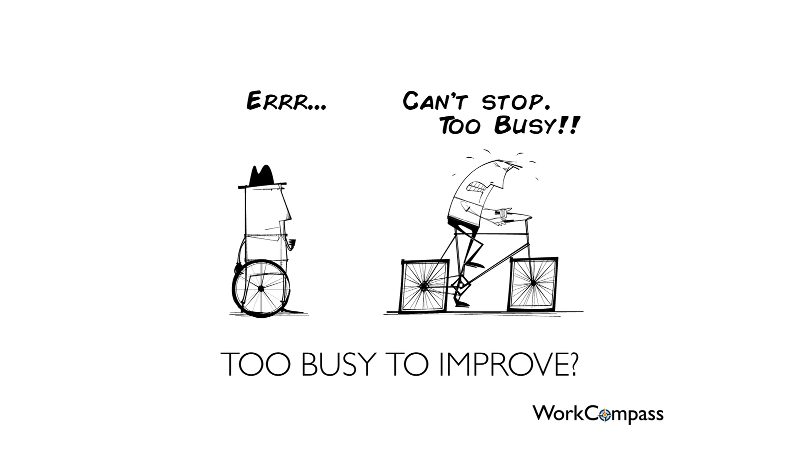

Posted on February 7, 2017
It was after a while I have once again engaged in a discussion about dependency injection in spring and how to handle it in tests. This is not the first time so I am writing my thoughts down to point here in any further conversations.
Autowired annotation poisoned our code and way of thinking. Do you miss something in this class just simply autowire this and that and you are done. This sort of thinking is almost perverse. Writing good software requires thinking about design not simply autowiring everything.
Not at all. Dependency injection is great tool, but there are some boundaries you should not cross. If I should recomend one thing about DI it would be:
Always use constructor injection
Constructor injection communicates dependencies well. You will never be able to create invalid object (ignoring passing null). And most importantly it slaps you in the face with your badly designed code! I always hear that having constructor with ten dependencies is not good. Yeah it is not. But what is wrong is your class depending on so much other modules, not the constructor itself. If your component requires ton of dependent components it indicates that you are doing something wrong - most probably violating SRP, or you are lacking necessary abstraction. I cannot stress this out enough.
And what about optional dependencies? I would preffer overloaded constructors in that case and if possible setting those dependencies to null objects not nulls. But in this case setters are tolerable.
But what if I need change dependency once instance was created? This is not really problem of DI, but you relying on mutability of object in you architecture.
But wouldn't this create a lot of small classes? Yes it would and it is a good thing. Small composable classes and interfaces or functions are building objects of every good software. Not thousand line long ServiceImpl classes with tens of autowired dependencies. You cannot reuse any of that. Only way how to reuse this monster is to add new method to it and use it whole in the client. This lack of composability lead developers to compose behavior using abstract classes which contains shared behavior. This is clearly abuse of class inheritance.
Wouldn't this slow me down? I mean, all those classes and constructors! If you think creating good design will slow you down you probably need to slow down.

Image sourceSo how do I mock in tests? I try to avoid mock libraries. I tend to create real objects usually. When you have small components it is usually very easy to write dummy implementations right in place in test - even as simple lambdas in java 8. I love this quote by [Rich Hickey](https://twitter.com/richhickey?lang=en)
Your mock object is a joke; that object is mocking you. For needing it.
As you see one bad decision led us not to reverting it but to making other bad decisions based on the first one. Our reply to "I tried to instantiate this class in test and it is a pain and I had to use reflection to set all twenty dependencies" should be "maybe there is something wrong with our code" not "cool idea lets make it a standard".
This is why well designed and clean code matters. Because someone will use it as cornerstone to his work. This snowball effect has been observed also as social behavior.
{kind=link}